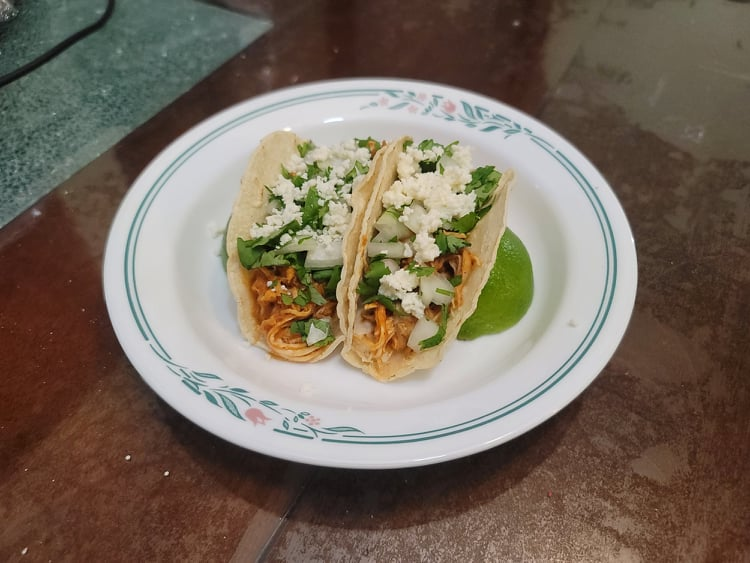

Chicken Tinga Tacos

Ingredients:
Chicken Tinga:
- 2 lb Cooked shredded chicken breasts
- 1 15 oz can Fire roasted diced tomatoes
- 2 tbsp Chipotle peppers in adobo sauce
- 1 large Onion, chopped
- 2 cloves Garlic
- 1 tsp Dried oregano
- 1 tsp Salt
- 1 tbsp Olive oil
Tacos:
- Corn tortillas
- Cilantro, chopped
- Onion, diced
- Queso fresco or Cotija cheese
Instructions:
- Place the tomatoes, chipotle peppers, onion, garlic, oregano, and salt into a blender and blend until very smooth.
- Heat the olive oil in a large pan over medium-high heat. Add in the blended sauce and let cook for 10 minutes.
- Add the shredded chicken to the pan and toss until fully combined with the sauce. Reduce the heat to low and cook for 10 more minutes to let the sauce thicken and reduce, tossing occasionally.
- Toast the tortillas in a separate pan. Prepare the tacos with the toasted tortillas, chicken, cilantro, onion, and cheese.